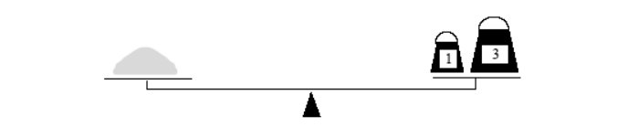
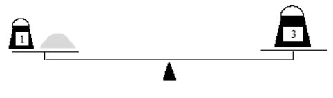

Old merchants measured many commodities using weights and a two-pan balancea practice that continues in many parts of the world today. If you are using a limited set of weights, however, you can only measure certain quantities accurately. For example, suppose that you have only two weights: a 1-ounce weight and a 3-ounce weight. With these you can easily measure out 4 ounces. You can also measure out 2 ounces by shifting the 1-ounce weight to the other side. determines whether it is possible to measure out the desired target amount with a given set of weights. The available weights are stored in a vector Weight. Each weight in the vector can be either: Put on the opposite side of the balance from the sample, put on the same side of the balance as the sample, or Left off the balance entirely. For example, suppose that you have only two weights: a 1-ounce weight and a 3-ounce weight. With these you can easily measure out 4 ounces. It is somewhat more interesting to discover that you can also measure out 2 ounces by shifting the 1-ounce weight to the other side 2 ounces by shifting the 1-ounce weight to the other side.
Given the following recursive function signature, write the function code such that this function find out if a certain target weight can be measured or not
 